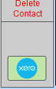
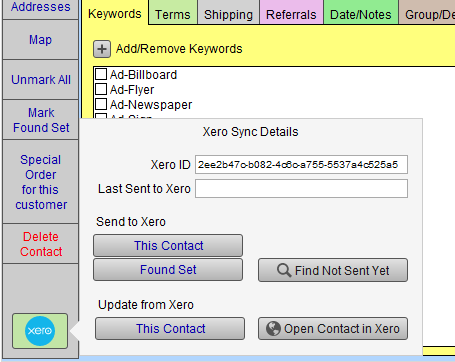

Xero Sync Contacts
You can send Contact info to Xero, or update the current Contact from Xero.
-
The following fields can synchronize between your Xero and FrameReady Contacts:
-
First name
-
Last name
-
Address, City, State, ZIP, Country (Xero to FrameReady only)
-
Phone (Xero to FrameReady only)
-
Website (Xero to FrameReady only)
-
How to Sync Contacts with Xero
-
In FrameReady, locate or perform a Find for the Contact you wish to work with.
-
In the customer's Contact record, click the Xero icon (lefthand sidebar, bottom).

-
The Xero Sync Details popover appears.

The Xero ID field links the Contact record with the record in your Xero account.
The Last Sent to Xero field is a date-time stamp. -
If you have updated the Contact record in FrameReady, click the This Contact button (below the Send to Xero heading) to send the updated information in FrameReady to Xero. You can also perform a find and use the Found Set.
-
Alternatively, if you have updated the Contact record in Xero, then click the This Contact button (below the Update from Xero heading) to update the FrameReady record.
-
Use the Find Not Sent Yet button to view FrameReady Contacts that have not been synced with Xero.
-
Use the Open Contact in Xero button to view the Contact in your Xero account.
© 2023 Adatasol, Inc.